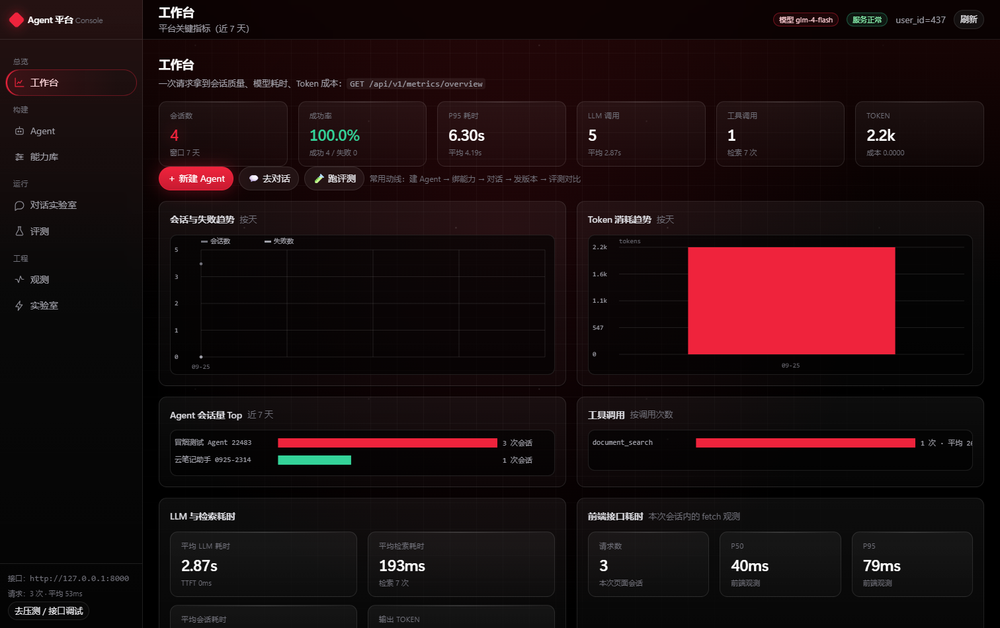
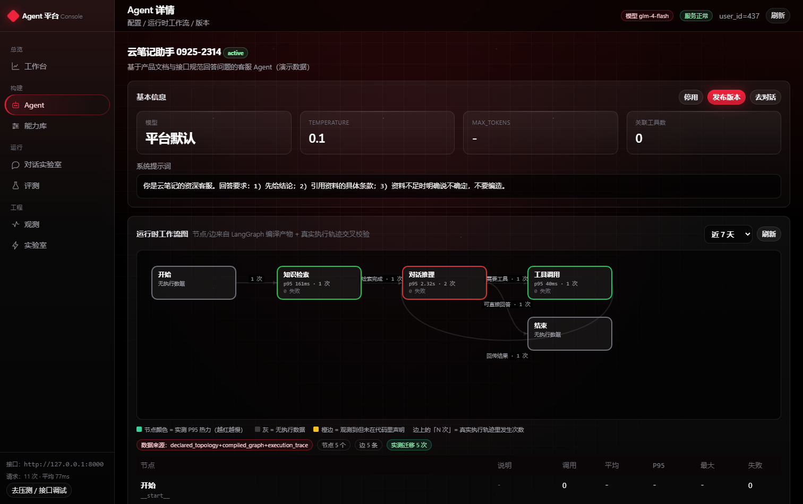
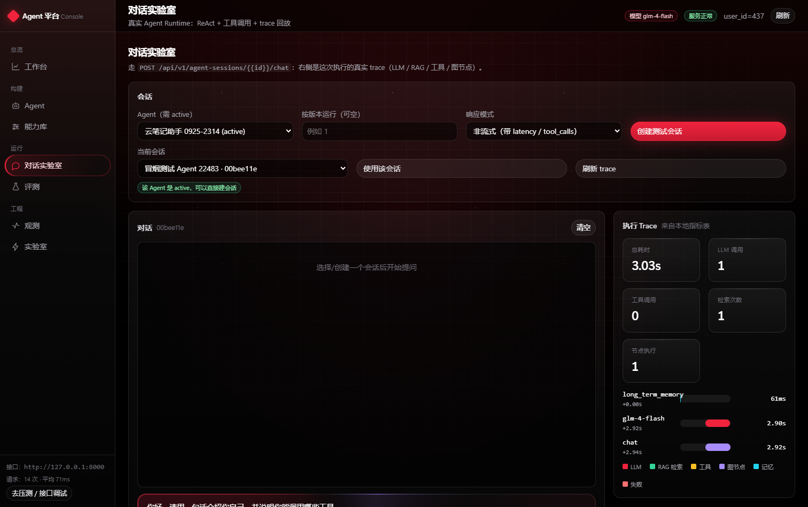
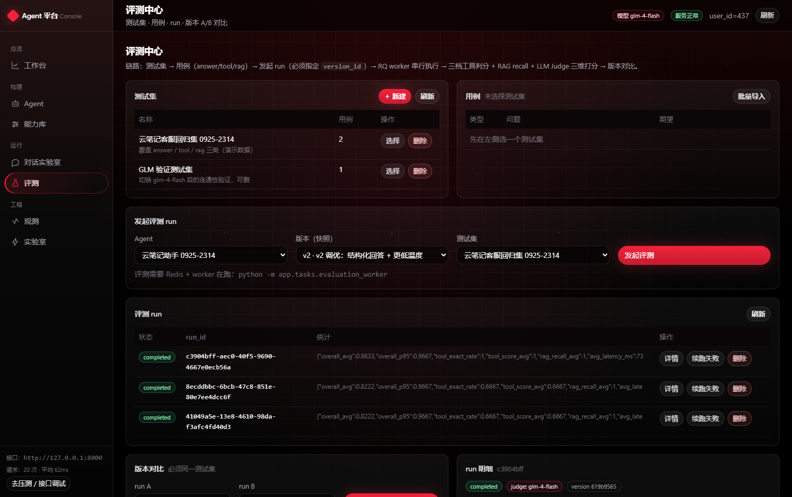
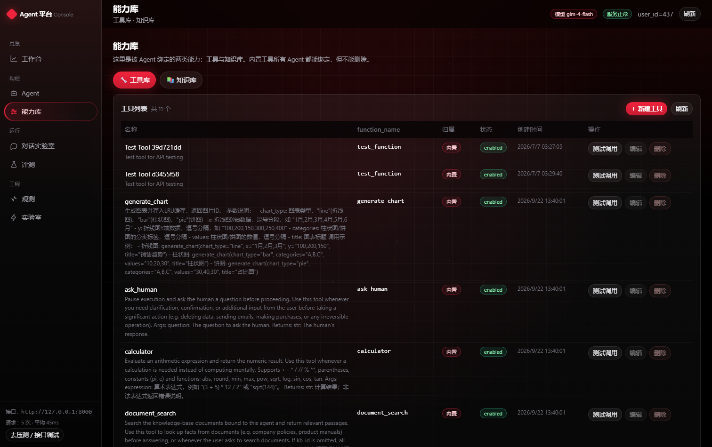
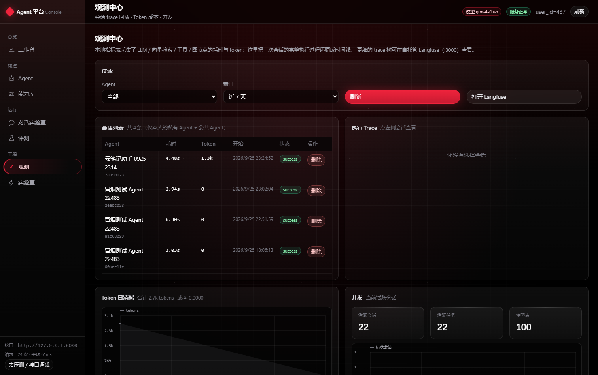
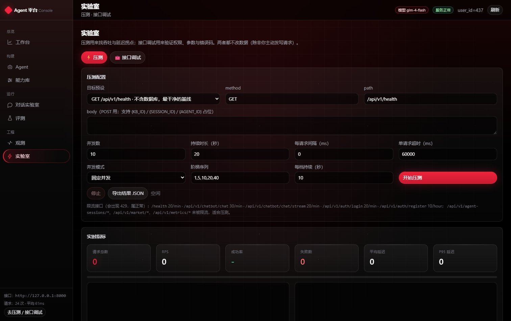
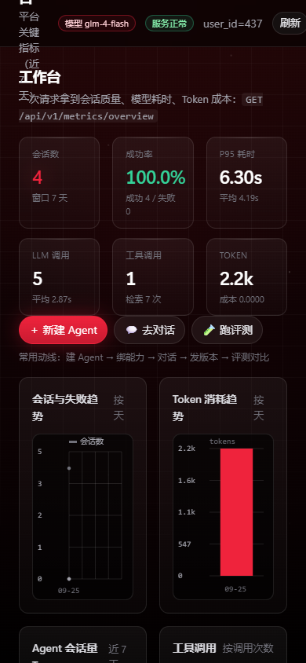

AI Agent 开发 · 运行 · 评测 平台
一个把「LLM Agent」当成工程系统来做的平台：Agent 可配置（提示词 / 模型 / 工具 / 知识库）、 运行可复现（版本快照）、效果可量化（自动评测 + 版本对比）、过程可观测（全链路 trace）， 并且能自己给自己压测找瓶颈。
为什么不是「又一个能聊天的 Agent」
问题
大多数 Agent Demo 停在「能对话」：模型换了、提示词改了，效果好不好全凭感觉； 线上慢在哪、贵在哪、哪一步失败，也说不清楚。改一次配置就像掷一次骰子。
做法
把 Agent 当作可发布的软件工件：配置 → 版本快照 → 评测跑批 → 版本对比 → 回滚； 同时把每一次执行的 LLM / 检索 / 工具 / 图节点耗时与 token 全部落库，形成可回放的 trace。
五层结构：从控制台到模型网关
说明：架构图里的「Agent Runtime」与「Evaluation」是两条独立链路——前者服务真实对话，后者按版本快照复现跑批， 两者共用同一套能力绑定与指标采集。
六个我认为最值得讲的设计
运行时工作流图（三重校验）
用 Command(goto=…) 做动态路由时，LangGraph 的静态图会画错边。
我改成「代码里声明拓扑 × 编译产物节点集合 × 真实执行轨迹」三方交叉校验，图上还能看到每个节点的实测 P95 与迁移次数。
评测闭环（数据驱动迭代）
测试集覆盖 answer / tool / rag 三类：工具调用三档判分（exact / partial / miss）、 RAG 期望命中文档召回率、LLM-as-Judge 三维打分，最后给出 stats 汇总与版本 A/B 差异。
版本快照与软回滚
发布版本会把提示词、模型、温度、工具完整定义、知识库绑定整体固化成自包含快照；
回滚是「新建一个 Rollback 版本」而不是覆盖历史，评测可随时按 version_id 复现。
全链路 trace
LLM 推理、向量检索、工具调用、图节点四类指标分别落库，再合并成一条按时间排序的 trace 时间线， 前端用甘特图回放：能一眼看出「这一轮是模型慢还是检索慢」。
能力绑定（工具 / 知识库）
Agent 与能力是多对多绑定：勾选式全量覆盖保存，界面文案严格区分「解绑」（只解除关联）与「删除」（移除能力本身）； 平台内置工具允许绑定但禁止删除。
性能工程（自研压测）
控制台内置浏览器压测面板：固定并发 / 阶梯递增、实时 RPS 与 P50/P95/P99、状态码分布、逐秒曲线，结果可导出 JSON； 同时标注了哪些接口被限流，避免把 429 误读成故障。
都是本机真实跑出来的数
接口压测（自研面板 · 4 并发 / 5 秒）
| 指标 | 结果 | 说明 |
|---|---|---|
| 请求总数 | 1,764 | /api/v1/health（不含数据库） |
| 吞吐 | 533.6 RPS | 浏览器端观测 |
| P95 延迟 | 9 ms | P50 ≈ 8 ms |
| 失败数 | 0 | 成功率 100% |
注：浏览器压测受单页面事件循环限制，数值用于相对比较与找拐点，不等于服务端极限。
评测与观测
| 指标 | 结果 |
|---|---|
| 综合分（overall_avg） | 0.98 |
| 工具精确命中率 | 100% |
| RAG 期望文档召回 | 100% |
| 单会话 LLM 调用 | 1 次 / 2.9 s |
| 检索耗时 | 38 ~ 193 ms |
| Token 用量（一次对话） | 879 + 1,308 |
控制台实拍
主题是 Red Noir（黑底 + 红），零构建原生前端：无 CDN、无 UI 框架依赖。








我在这两个项目里修掉的真实缺陷
不是教科书式的最佳实践清单，而是我自己踩到、定位、修掉，并补了回归手段的问题。
静默失败最可怕
- 内置工具绑定被权限判断静默跳过：接口返回成功，
tool_count却是 0 —— 改成 owner 为空即视为平台内置工具。 - LLM token 用量被硬编码成 0，导致 Token / 成本看板恒为 0 —— 改为从
usage_metadata三级兜底提取。 - 知识库绑定接口返回
{kb_ids:[…]}，前端却按列表解析，永远显示「未绑定」。
边界与权限
- 管理端删除工具的接口没有鉴权，任何人都能删掉平台自带的 calculator —— 补登录 + admin，并对内置工具返回 409。
- 版本被评测 run 引用时不允许删除，接口直接返回依赖的 run 明细（id / 状态 / 测试集 / 完成数），前端列表格，不用用户自己查。
- 会话删除连带清理 LLM / 工具 / 检索 / 节点四类明细，避免外键残留。
- 前端任何一个 401 都会清 token 并重渲染，曾经造成无限刷请求 —— 加了重入保护。
源码与文档
仓库里包含完整后端、控制台前端、Docker Compose、Alembic 迁移、pytest 回归（88 passed）与演示数据脚本。